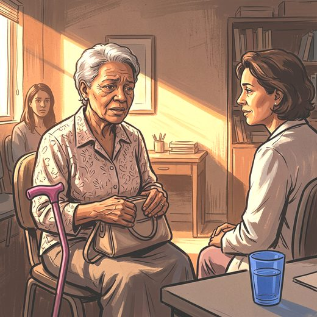

Consulta rápida à beira do leito
Condutas, doses e interações.
Referências da aula · 8
- National Institute for Health and Care Excellence. Generalised anxiety disorder and panic disorder in adults: management. Clinical guideline CG113. London: NICE; 2011.
- Hendriks G-J, Janssen N, Robertson L, van Balkom AJ, van Zelst WH, Wolfe S, et al. Cognitive behavioural therapy and third-wave approaches for anxiety and related disorders in older people. Cochrane Database Syst Rev. 2024;(7):CD007674. PMID 38973756. doi:10.1002/14651858.CD007674.pub3.PubMedDOI
- Laidlaw K, Charlesworth G, Bhar S. Mental health and treatment challenges in older adults. Nat Rev Psychol. 2025;4(11):737-51.
- Gould RL, Coulson MC, Howard RJ. Efficacy of cognitive behavioral therapy for anxiety disorders in older people: a meta-analysis and meta-regression of randomized controlled trials. J Am Geriatr Soc. 2012;60(2):218-29. PMID 22283717. doi:10.1111/j.1532-5415.2011.03824.x.PubMedDOI
- Montero-Odasso M, van der Velde N, Martin FC, Petrovic M, Tan MP, Ryg J, et al. World guidelines for falls prevention and management for older adults: a global initiative. Age Ageing. 2022;51(9):afac205. PMID 36178003. doi:10.1093/ageing/afac205.PubMedDOI
- Stubbs B, Vancampfort D, Rosenbaum S, Firth J, Cosco T, Veronese N, et al. An examination of the anxiolytic effects of exercise for people with anxiety and stress-related disorders: a meta-analysis. Psychiatry Res. 2017;249:102-8. PMID 28088704. doi:10.1016/j.psychres.2016.12.020.PubMedDOI
- Craske MG, Stein MB. Anxiety. Lancet. 2016;388(10063):3048-59. PMID 27349358. doi:10.1016/S0140-6736(16)30381-6.PubMedDOI
- 2023 American Geriatrics Society Beers Criteria® Update Expert Panel. American Geriatrics Society 2023 updated AGS Beers Criteria® for potentially inappropriate medication use in older adults. J Am Geriatr Soc. 2023;71(7):2052-81. PMID 37139824. doi:10.1111/jgs.18372.PubMedDOI
Documentos oficiais
Leis e publicações do Ministério da Saúde sobre o cuidado da pessoa idosa, de acesso livre.
Abrir os documentos